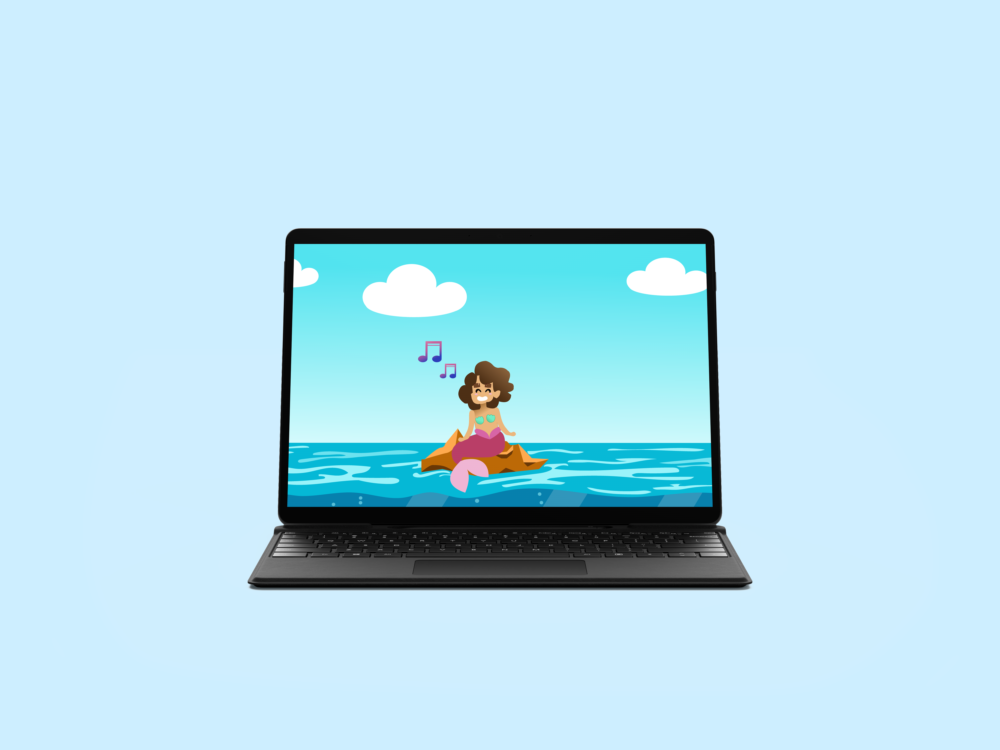
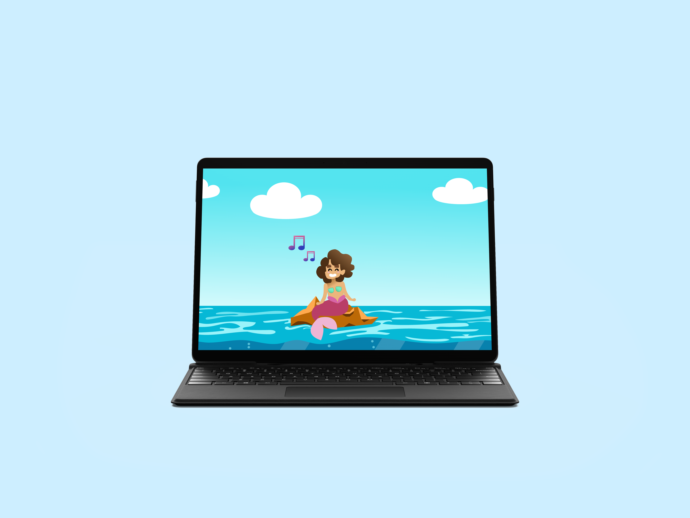

De Hernieuwde waarde van het Chinese Cultuur
De Hernieuwde waarde van het Chinese Cultuur

Dit is een A5 boekje met alle informatie van het Lettertype Binner EF.

Hier heb ik een poster gemaakt met een vier letter woord. Het woord die ik heb gekozen is Body.
Voor web typografie heb ik een filmfragment vormgeven voor mensen die doof zijn geboren. De filmfragment gaat over de film blade runner. Blade runner is een science fiction fllm. Zonder geluid kun je aangegeven dat het gaat over een science fiction film door het sombere sfeer, maar het is saai en je kan niks begrijpen. Met geluid kun je hoor je een verschillende geluiden die het fragment spannender maakt. Aan mijn de taakt om het filmfragment spannender en somber maken voor de mensen die doof zijn met behulp van CSS.

Dit is een poster die mensen bewustmaken over cultuur appropriatie op de afro-americaanse cultuur. Op de poster kunt u zien hoe de meerderheid (witte vrouw) een positief reactie krijgt terwijl de minderheid (zwarte man) discriminatie krijgt voor dezelfde haarstijl.

Mijn prototype is een aantrekkelijk tijdlijn van het klassieke karakter Mario. De Manier hoe ik de tijdlijn had gevisualiseerd is door de verschillende versies van Mario te laten zien. Om het prototype moet je een een mario versie keizen en je krijgt korte informatie over die mario. Het Prototype is gemaakt met HTML, CSS en Javascript.
 

Voor interface en beweging heb ik een interface gammakt op XD van een karakter en drie functie laten uitvoeren met behulp van animatie. Mijn Karakter heet Coral en zij is een zeemermin. Zij kan zingen, dansen en zwemmen. Om de animatie te maken heb u=ik gebruikt gemaakt van Adobe After effects.
Prototype